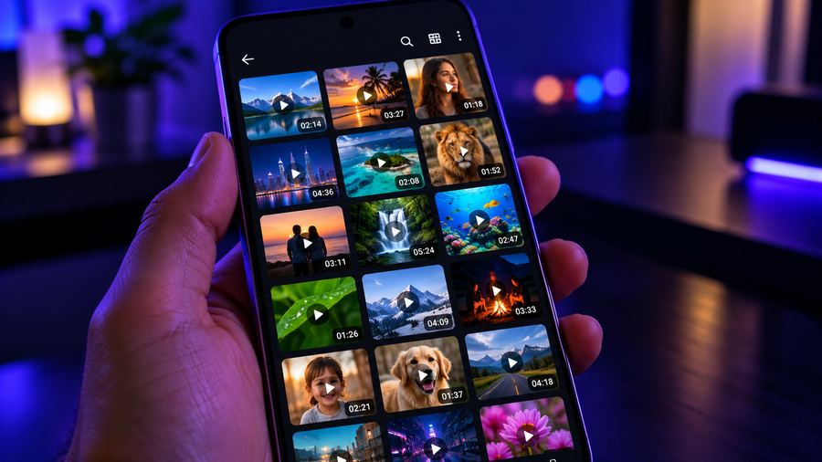

किसी का WhatsApp स्टेटस कैसे सेव करें (फ़ोटो और वीडियो) – 2026
▶ Google Play से Vidnexa लें
WhatsApp स्टेटस 24 घंटे बाद गायब हो जाते हैं। अगर किसी दोस्त ने ऐसी फ़ोटो या वीडियो डाली है जो आप रखना चाहते हैं, तो उसे गैलरी में सेव करने का आसान तरीका ये है — बिना वॉटरमार्क।

क्या किसी का WhatsApp स्टेटस सेव कर सकते हैं?
WhatsApp में "स्टेटस डाउनलोड" का कोई बटन नहीं है। लेकिन जब आप कोई स्टेटस देखते हैं, तो आपका फ़ोन उसे कुछ समय के लिए सेव कर लेता है। स्टेटस सेवर इन्हीं देखे हुए स्टेटस को पढ़ता है, ताकि आप पसंद वाले को गायब होने से पहले सेव कर सकें।
Vidnexa से स्टेटस सेव करें
4K/8K HDR वीडियो, म्यूज़िक, नेटवर्क प्लेयर, फ़ाइलें और फ़ोटो — एक मुफ़्त ऐप, साफ़ प्लेबैक, साइन-अप या अकाउंट की ज़रूरत नहीं।
▶ Google Play से डाउनलोड करेंसबसे आसान तरीका: Vidnexa का बिल्ट-इन स्टेटस सेवर
Vidnexa Player में WhatsApp स्टेटस सेवर पहले से है, इसलिए अलग ऐप की ज़रूरत नहीं। ये आपके देखे हुए स्टेटस दिखाता है और फ़ोटो-वीडियो सीधे गैलरी में डाउनलोड करने देता है।
स्टेप बाय स्टेप
- पहले स्टेटस को WhatsApp में खोलें, ताकि आपका फ़ोन उसे लोड कर ले।
- Vidnexa Player खोलें और स्टेटस सेवर में जाएँ।
- फ़ोटो और वीडियो फ़ुल-स्क्रीन में देखें।
- डाउनलोड (↓) बटन दबाएँ — फ़ाइल तुरंत गैलरी में सेव हो जाती है, बिना वॉटरमार्क।
- सेव की गई फ़ाइल कहीं भी शेयर करें।

अलग सेवर ऐप की जगह Vidnexa क्यों
- वीडियो, म्यूज़िक, फ़ाइलें और स्टेटस सेव — सब एक ऐप में, फ़ोन में कम भीड़।
- साफ़ डिज़ाइन और साइन-अप या अकाउंट की ज़रूरत नहीं।
- सेव की गई फ़ाइलें पूरी क्वालिटी में सीधे गैलरी में जाती हैं।
WhatsApp आपके फ़ोन में स्टेटस कहाँ रखता है
जब आप किसी का स्टेटस खोलते हैं, तो WhatsApp उसे चलाने के लिए आपके फ़ोन के एक छिपे फ़ोल्डर में डाउनलोड करता है। स्टेटस सेवर इसी फ़ोल्डर को पढ़ता है। ये फ़ोल्डर अस्थायी है, इसलिए स्टेटस की मियाद ख़त्म होते ही, यानी पोस्ट होने के 24 घंटे बाद, फ़ाइल अपने-आप हट जाती है।
नए Android वर्ज़न में ऐप हर फ़ोल्डर नहीं पढ़ सकते, इसलिए स्टेटस दिखने से पहले आपसे एक बार अनुमति माँगी जा सकती है।
अगर स्टेटस नहीं दिख रहा
- पहले उसे WhatsApp में खोलें। जो स्टेटस आपने नहीं देखा, वो अभी आपके फ़ोन में सेव नहीं हुआ है।
- कुछ सेकंड रुकें, फिर वापस आकर स्टेटस सेवर दोबारा खोलें।
- 24 घंटे की सीमा देखें। स्टेटस की मियाद ख़त्म हो गई हो, तो उसे सेव नहीं किया जा सकता।
- अनुमति जाँचें। अगर पहले फ़ोल्डर की अनुमति मना कर दी थी, तो पूछे जाने पर या फ़ोन की सेटिंग से दे दें।
ज़िम्मेदारी से सेव और शेयर करें
स्टेटस किसी और का निजी कंटेंट होता है। अपने लिए कॉपी रखना एक बात है, और उसे कहीं और पोस्ट करना दूसरी। कुछ बुनियादी नियम:
- सिर्फ़ वही सेव करें जिससे मालिक को दिक़्क़त न हो।
- किसी की फ़ोटो या वीडियो WhatsApp के बाहर शेयर करने से पहले पूछ लें।
- सेव किए गए कंटेंट से कभी किसी को शर्मिंदा, परेशान न करें या उसका रूप धरकर पेश न आएँ।
- याद रखें कि स्टेटस के अंदर के गाने और वीडियो कॉपीराइट से सुरक्षित हो सकते हैं।
अपने स्टेटस सेव रखना
अगर आपने खुद स्टेटस डाला है और उसकी कॉपी रखनी है, तो मियाद ख़त्म होने से पहले सेव कर लेना सबसे आसान है। अगर फ़ोन के कैमरे से बनाया था, तो असली फ़ाइल आम तौर पर गैलरी में भी होती है।
निष्कर्ष
पसंद का स्टेटस रखने के लिए किसी संदिग्ध अलग ऐप की ज़रूरत नहीं। Vidnexa का बिल्ट-इन स्टेटस सेवर ये काम साफ़-सुथरे तरीके से, मुफ़्त करता है — ऐप की बाकी सारी चीज़ों के साथ।
WhatsApp Status Kaise Save Kare? (3 स्टेप)
- WhatsApp खोलें, Updates टैब में जाएँ और जो स्टेटस रखना है उसे देखें।
- Vidnexa Player खोलें और Status Saver पर टैप करें।
- वही फ़ोटो या वीडियो चुनें और डाउनलोड (↓) दबाएँ। फ़ाइल गैलरी में आ जाएगी।
किसी का स्टेटस वीडियो कैसे सेव करें?
वीडियो स्टेटस भी फ़ोटो की तरह ही सेव होता है। बस एक बात ध्यान रखें: WhatsApp में वीडियो को तब तक चलने दें जब तक वह पूरा लोड न हो जाए। फ़ोन में वही हिस्सा सेव होता है जो WhatsApp ने डाउनलोड किया है। पूरा लोड होने के बाद Status Saver खोलें और डाउनलोड दबाएँ।
WhatsApp स्टेटस फ़ोन में कहाँ सेव होते हैं? (.Statuses फ़ोल्डर)
स्टेटस देखने पर WhatsApp उसकी एक अस्थायी कॉपी .Statuses नाम के छिपे हुए फ़ोल्डर में रखता है। नाम के आगे लगा डॉट (.) ही इसे गैलरी और ज़्यादातर फ़ाइल ऐप से छिपा देता है। यह फ़ोल्डर आपके Android वर्ज़न के हिसाब से अलग जगह होता है:
- Android 11 और उससे नए: Internal storage › Android › media › com.whatsapp › WhatsApp › Media › .Statuses
- Android 10 और पुराने: Internal storage › WhatsApp › Media › .Statuses
- WhatsApp Business का फ़ोल्डर अलग है: Android › media › com.whatsapp.w4b › WhatsApp Business › Media › .Statuses
फ़ाइल मैनेजर में यह फ़ोल्डर देखने के लिए पहले Show hidden files चालू करना पड़ सकता है। स्टेटस की मियाद ख़त्म होते ही यहाँ की फ़ाइलें अपने-आप हट जाती हैं।
Android 11 और नए फ़ोन में क्या बदला?
Android 11 में scoped storage आया, जिससे ऐप हर फ़ोल्डर नहीं पढ़ सकते। उसी समय WhatsApp ने अपनी मीडिया फ़ाइलें सुरक्षित Android › media फ़ोल्डर में डाल दीं। इसलिए अब स्टेटस सेवर को एक बार फ़ोल्डर की अनुमति देनी पड़ती है, जो Android की अपनी परमिशन स्क्रीन से मिलती है। पहली बार Status Saver खोलने पर Vidnexa अनुमति माँगे, तो Allow कर दें, फिर देखे हुए स्टेटस दिखने लगेंगे।
अक्सर पूछे जाने वाले सवाल
WhatsApp स्टेटस का वीडियो कैसे सेव करें?
पहले स्टेटस को WhatsApp में देखें, फिर Vidnexa Player का स्टेटस सेवर खोलें, वीडियो पर टैप करके डाउनलोड दबाएँ। वो बिना वॉटरमार्क गैलरी में सेव हो जाएगा।
क्या WhatsApp स्टेटस सेव करने के लिए अलग ऐप चाहिए?
नहीं। Vidnexa Player में स्टेटस सेवर पहले से है, इसलिए अलग सेवर ऐप डाले बिना आप स्टेटस देख और डाउनलोड कर सकते हैं।
क्या सेव किए गए स्टेटस पर वॉटरमार्क आएगा?
नहीं। Vidnexa असली फ़ोटो या वीडियो बिना किसी वॉटरमार्क के गैलरी में सेव करता है।
WhatsApp स्टेटस कितनी देर रहते हैं?
WhatsApp स्टेटस 24 घंटे बाद गायब हो जाते हैं, इसलिए जो रखना है उसे पहले ही सेव कर लें।
स्टेटस सेवर में स्टेटस क्यों नहीं दिख रहा?
पहले स्टेटस को WhatsApp में खोलें ताकि फ़ोन उसे लोड कर ले, फिर स्टेटस सेवर में वापस जाएँ। जो स्टेटस आपने नहीं देखा, वो फ़ोन में सेव नहीं होता।
क्या किसी और का स्टेटस सेव और शेयर करना ठीक है?
सिर्फ़ वही सेव करें जिससे मालिक को दिक़्क़त न हो, और बिना इजाज़त किसी की फ़ोटो या वीडियो दोबारा पोस्ट न करें।
Vidnexa Player मुफ़्त डाउनलोड करें
4K/8K HDR वीडियो, म्यूज़िक, नेटवर्क प्लेयर, फ़ाइलें और फ़ोटो — एक मुफ़्त ऐप, साफ़ प्लेबैक, साइन-अप या अकाउंट की ज़रूरत नहीं।
▶ Google Play से डाउनलोड करें